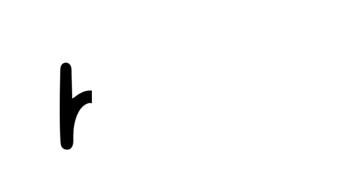
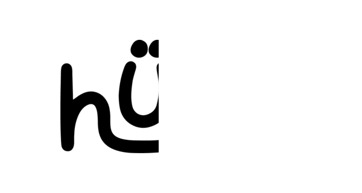
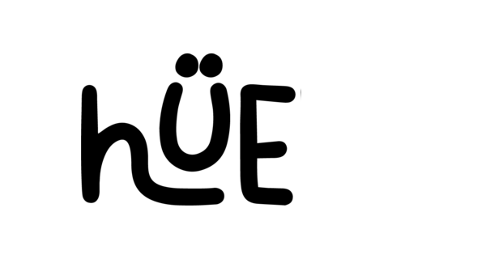
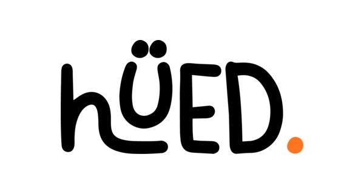

The logo, and four frames of its loading animation




Interface colours, from the app's light palette
Paper#FFFFFF
Ink#1A1A1A
Muted#8E8E8E
Line#DBDBDB
Action#0095F6
Streak#FF7A1A
Good match#1E9E54
The day's colourchanges daily
Type
Frauncesheadings, a serif
Hanken Groteskeverything else